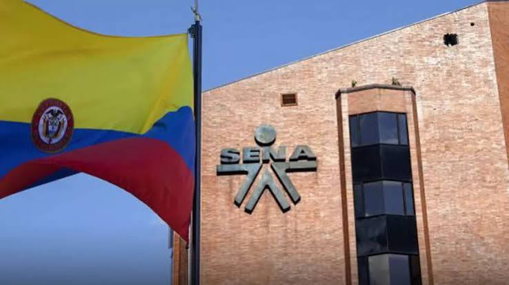
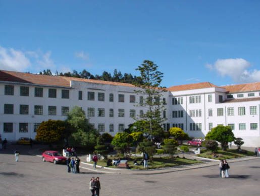
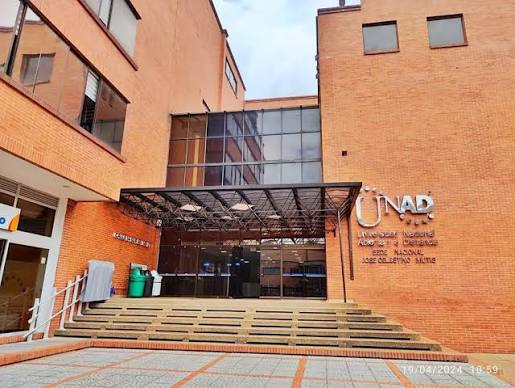
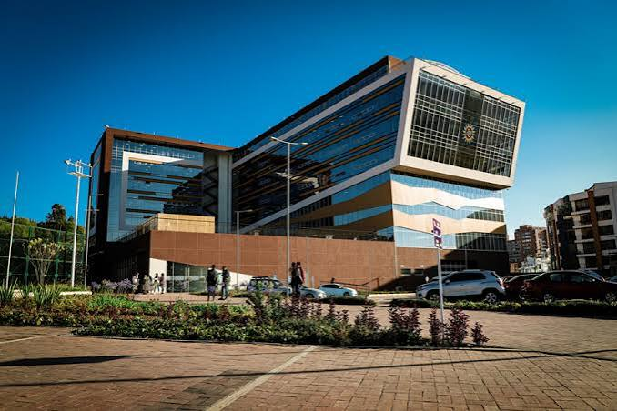

Tu guía profesional confiable
para tomar decisiones seguras
Información validada al 2026 sobre carreras, salarios reales, requisitos, instituciones oficiales y beneficios para estudiantes de 9°, 10° y 11° grado en Boyacá y todo Colombia.
📊 Datos oficiales
Salarios según Ministerio de Trabajo, costos y requisitos confirmados en universidades y SENA.
📍 Enfoque local
Información detallada de Tunja, UPTC, Sena Boyacá y oportunidades para nuestra región.
🎯 Orientación clara
Sin jerga complicada: duración, beneficios, dificultades y salida laboral explicados sencillamente.
✨ ¿En qué eres bueno? ¡Te enseñamos en qué emprender!
Escribe abajo lo que te gusta o tus habilidades (ejemplo: "Soy bueno interactuando con las personas, sé cocinar y me gusta preparar postres y recetas"). Al hacer clic en analizar, se desplegará una tarjeta completa con tu presupuesto, consejos de productividad y un mensaje motivacional.
💡 Opciones ideales en las que puedes emprender:
💵 Presupuesto Inicial (COP):
⚡ Consejos de Productividad:
📍 Tu primer paso hoy en Boyacá:
Test Profesional Interactivo - 72 Preguntas
Responde con sinceridad las 72 preguntas para calcular tu afinidad exacta con los perfiles profesionales adaptados a Colombia 2026.
Bloque 1: Motivaciones y Estilo de Vida (1 - 12)
Bloque 2: Trabajo en Equipo y Liderazgo (13 - 24)
Bloque 3: Perfil Psicológico y Resiliencia (25 - 36)
Bloque 4: Intereses Científicos, Tecnológicos y Analíticos (37 - 48)
Bloque 5: Creatividad, Arte y Comunicación (49 - 60)
Bloque 6: Negocios, Impacto Social y Estilo de Vida (61 - 72)
📊 Tus Perfiles Vocacionales
Porcentaje de afinidad obtenido con base en tus 72 respuestas
Perfil Principal
🎓 Carreras recomendadas:
⏱️ Duración promedio:
• Técnico: 6-12 meses
• Tecnólogo: 18-24 meses
• Profesional: 4-7 años
💰 Salarios Colombia 2026:
• Inicial: $1.800.000 - $3.800.000 COP
• Experiencia: $4.000.000 - $12.000.000 COP
Explorar Carreras por Área (Universitarias y SENA)
Catálogo completo validado al 2026 con opciones universitarias de alta calidad y programas técnicos/tecnológicos gratuitos del SENA en Boyacá y Colombia.
💼 1. Área Empresarial, Administrativa y Legal
Administración de Empresas
Planifica, dirige y controla recursos organizacionales y estrategias de mercado.
Contaduría Pública
Gestión financiera, auditoría, impuestos y control contable empresarial.
Gestión Contable y Financiera
Apoyo en registros contables, costos, presupuestos y normatividad tributaria.
Derecho
Litigio, asesoría jurídica, defensa legal y aplicación de normas constitucionales.
Gestión del Talento Humano
Selección de personal, bienestar laboral, nómina y desarrollo organizacional.
🩺 2. Área de la Salud y Bienestar
Medicina
Diagnóstico, tratamiento clínico, prevención y recuperación de la salud humana.
Enfermería
Cuidado clínico especializado, gestión de servicios sanitarios y asistencia a pacientes.
Enfermería y Apoyo en Salud
Asistencia hospitalaria básica, toma de signos vitales y cuidado primario de pacientes.
⚙️ 3. Ciencias, Tecnología e Ingeniería
Ingeniería de Sistemas y Computación
Creación de software, ciberseguridad, bases de datos y arquitectura tecnológica.
Tecnología en Análisis y Desarrollo de Software (ADSO)
Programación de aplicaciones web, móviles y sistemas informáticos prácticos.
Ingeniería Civil
Diseño y ejecución de obras de infraestructura, vías, puentes y edificaciones.
Ingeniería Industrial
Optimización de procesos productivos, cadenas de suministro y gestión de calidad.
Mantenimiento de Equipos Biomédicos e Industriales
Calibración y reparación de tecnología avanzada para hospitales e industrias.
🎨 4. Arte, Diseño y Comunicación
Diseño Gráfico / Multimedia
Creación de identidad visual, experiencias digitales, UX/UI y branding.
Producción de Multimedia
Edición de video, animación 2D/3D, fotografía y contenidos digitales interactivos.
Comunicación Social y Periodismo
Creación de contenidos informativos, relaciones públicas y comunicación digital.
🌾 5. Área Agropecuaria, Veterinaria y Ambiental
Medicina Veterinaria y Zootecnia
Salud animal, producción pecuaria, bioseguridad y gestión en el sector agropecuario.
Ingeniería Agronómica
Tecnología de cultivos, producción agrícola sostenible y seguridad alimentaria regional.
Producción Agropecuaria Ecológica
Manejo limpio de cultivos, sistemas de riego y ganadería sostenible en Boyacá.
Universidades e Instituciones de Educación Superior
Conoce las opciones universitarias y la ruta rápida y gratuita que te ofrece el SENA para construir un futuro laboral exitoso.
El SENA: Tu Puente Rápido al Éxito Profesional
Formación de alta demanda, 100% gratuita y garantizada por el Estado colombiano.

⚡ Rápida Inserción Laboral
En solo 1 a 2 años te conviertes en un profesional técnico o tecnólogo listo para trabajar en el mercado laboral real.
💡 Cadena de Formación
Puedes homologar tus estudios de Tecnólogo SENA en universidades como UPTC o UNAD para obtener tu título profesional en menos tiempo.
💵 Subsidio y Prácticas Pagas
Mediante el contrato de aprendizaje recibes ingresos económicos mientras estudias y realizas tus prácticas en empresas.
📌 Programas con Mayor Salida Laboral en el SENA Boyacá:
- • 💻 Tecnólogo en Análisis y Desarrollo de Software (ADSO)
- • 📊 Tecnólogo en Gestión Empresarial y Contabilidad
- • 🛠️ Tecnólogo en Mantenimiento de Equipos e Instalaciones
- • 🌾 Tecnólogo en Producción Agropecuaria Ecológica
- • 🩺 Técnico en Servicios de Salud y Apoyo Sanitario
- • 🎨 Tecnólogo en Producción Multimedia y Diseño Web
📍 Universidades en Tunja y Boyacá

UPTC - Universidad Pedagógica y Tecnológica de Colombia
Pública - Principal del departamentoFundada en 1953, con sedes principales en Tunja, Sogamoso, Duitama y Chiquinquirá.
Visitar Sitio Web UPTC 🔗Universidad de Boyacá
Privada - Alta calidadInstitución acreditada en alta calidad con sedes en Tunja y Sogamoso.
Visitar Sitio Web UniBoyacá 🔗
UNAD - Universidad Nacional Abierta y a Distancia
Pública - Modalidad Virtual y PresencialLíder en educación virtual con centro CEAD en Tunja y cobertura en toda Colombia.
Visitar Sitio Web UNAD 🔗
Universidad Santo Tomás - Seccional Tunja
Privada - Acreditación InstitucionalPrimer claustro universitario de Colombia con campus moderno en Tunja.
Visitar Sitio Web USTA Tunja 🔗Servicio Nacional de Aprendizaje - SENA
Formación profesional integral 100% gratuita, con alta demanda laboral y oportunidades inmediatas.
✅ Sin costo de matrícula
El Estado cubre todos los gastos de formación e insumos
💼 Contrato de aprendizaje
Recibes apoyo económico mensual mientras realizas prácticas en empresas reales
📜 Títulos de alta empleabilidad
Técnico y Tecnólogo avalados oficialmente por el Ministerio de Educación
🌟 Razones para Elegir el SENA
• Experiencia Práctica Real: Más del 70% de tu proceso de aprendizaje es práctico en talleres y laboratorios de vanguardia.
• Homologación Universitaria: Al terminar tu Tecnólogo en el SENA, puedes ingresar a carreras universitarias públicas y privadas en semestres avanzados.
• Fondo Emprender: Acceso a capital semilla no reembolsable para crear tu propia empresa o emprendimiento en Boyacá.
📍 Centros de formación en Boyacá
Centro de Gestión Administrativa y de Mercados - Tunja
Programas: Contabilidad, Ventas, Recursos Humanos, Desarrollo Empresarial
Centro de Industria y Construcción - Tunja
Programas: Sistemas, Electricidad, Mecánica, Obras Civiles
Centro Agropecuario - Tunja / Sogamoso
Programas: Agricultura, Ganadería, Transformación de alimentos
Centro Minero y Ambiental - Sogamoso
Programas: Minería, Gestión ambiental, Topografía
Tu Camino Hacia el Éxito: Guía Motivacional por Grado
Cada etapa escolar es un escalón hacia la construcción de tus sueños. ¡Descubre cómo aprovechar al máximo tu momento actual!
Grado 9°: Descubre Tu Potencial Único
"El futuro pertenece a quienes creen en la belleza de sus sueños."
- ✨ Explora sin límites: Es el momento perfecto para descubrir tus pasiones, probar actividades creativas y apasionarte por el conocimiento.
- 🌱 Siembra hábitos fuertes: Un buen promedio desde 9° te abrirá las puertas a becas y convenios de excelencia.
- 💡 Conoce tus fortalezas: No te compares con nadie. Tus habilidades únicas son la llave para destacar en el mañana.
Grado 10°: Construye Tu Visión Estratégica
"No hay metas inalcanzables, solo personas que se rinden antes de tiempo."
- 🎯 Investiga tus opciones: Conoce a fondo las carreras, el SENA y las universidades. Infórmate sobre lo que te apasiona y cómo pagan en el mundo laboral.
- 🚀 Aprovecha la articulación con el SENA: Si tu colegio la ofrece, obtén tu primer título técnico antes de graduarte.
- 🔥 Prepárate con disciplina: Empieza a reforzar tus áreas clave para las pruebas Saber 11. Cada esfuerzo extra suma.
Grado 11°: Conquista Tu Gran Futuro
"Tu único límite es la decisión de empezar hoy a construir tu destino."
- 🏆 Da el 100% en el ICFES: Afronta la prueba Saber 11 con mentalidad ganadora y confianza en todo lo que has aprendido.
- 💸 Abre puertas a becas e ICETEX: Mantente atento a las convocatorias públicas y programas gubernamentales de financiación.
- 💪 Toma acción sin miedo: Elige la ruta que resuene con tu vocación, ya sea el SENA, la universidad o un emprendimiento. ¡Confía en ti!
Opciones sin Universidad & Guía de Emprendimiento
El título universitario no es el único camino al éxito. Descubre alternativas técnicas muy demandadas y aprende cómo construir tu propio negocio rentable en Colombia.
¿Cómo Emprender con Éxito desde Joven?
Emprender es resolver un problema real para otras personas y cobrar por ello. Sigue esta hoja de ruta comprobada:
Identifica una Necesidad
Observa tu entorno en Tunja o Boyacá. ¿Qué producto o servicio falta o se presta de forma deficiente?
Crea un PMV (Producto Mínimo)
No inviertas grandes sumas de dinero al inicio. Lanza una versión básica de tu idea y pruébala con tus primeros clientes.
Usa Redes Sociales
Instagram, TikTok y WhatsApp Business son tus mejores canales de venta gratuitos. Muestra el proceso y genera confianza.
Reinvierte tus Ganancias
En los primeros 6 a 12 meses, reinvierte lo generado en mejorar tu inventario, herramientas o capacitación.
💰 Apoyos Oficiales y Capital Semilla en Colombia:
• Fondo Emprender del SENA
Otorga capital semilla no reembolsable a tecnólogos o estudiantes para financiar sus proyectos productivos.
www.fondoemprender.com 🔗• iNNpulsa Colombia
Agencia del Gobierno Nacional que apoya el emprendimiento, la innovación y el desarrollo empresarial.
innpulsacolombia.com 🔗• Cámara de Comercio de Tunja
Capacitaciones gratuitas, asesoría en formalización empresarial y ferias comerciales locales.
cctunja.org.co 🔗🛠️ Opciones Prácticas y de Alta Demanda
🛠️ Oficios Técnicos Especializados
Tienen alta demanda continua y permiten trabajar de forma independiente o montar un taller propio.
- • Técnico en electricidad residencial y solar
- • Mecánica automotriz y de motocicletas
- • Instalación de redes, fibra óptica y cámaras de seguridad
- • Mantenimiento de aire acondicionado y refrigeración
💻 Habilidades Digitales y Freelance
Permiten trabajar desde casa para clientes de Colombia y el exterior cobrando en dólares o pesos.
- • Marketing digital y gestión de redes (Community Manager)
- • Edición de video profesional y contenido para redes
- • Diseño web en Shopify, WordPress o Webflow
- • Soporte técnico remoto y gestión de datos
📦 Comercio y Servicios Locales
Emprendimientos tradicionales con innovación tecnológica y buen servicio al cliente.
- • Tienda en línea (E-commerce) con envíos a nivel nacional
- • Gastronomía rápida, repostería temática o cafetería de especialidad
- • Servicios agropecuarios y transformación de productos en Boyacá
- • Agencia de logística, mensajería o turismo local
Recursos oficiales y apoyo
Entidades confiables para consultar información y ayuda económica.
🏛️ Ministerio de Educación Nacional
Regula y vigila la calidad de la educación en Colombia.
www.mineducacion.gov.co 🔗